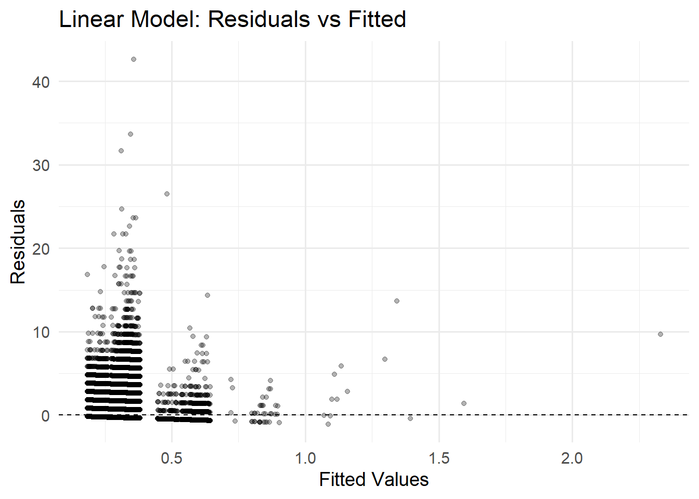
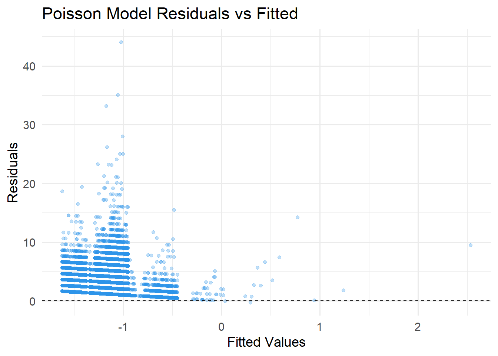

This section investigates which factors are associated with the
number of persons injured in a collision.
We compare:
We use:
Convert hour correctly:
mvc_model <- mvc_clean |>
mutate(
hour = hour(crash_time), # extract hour from hms
borough = as.factor(borough),
number_of_persons_killed = as.numeric(number_of_persons_killed)
) |>
filter(!is.na(hour))Check dataset:
## Rows: 1,978,026
## Columns: 26
## $ crash_date <date> 2023-11-01, 2021-09-11, 2021-12-14, 202…
## $ crash_time <time> 01:29:00, 09:35:00, 08:13:00, 17:05:00,…
## $ borough <fct> BROOKLYN, BROOKLYN, BROOKLYN, NA, BRONX,…
## $ zip_code <dbl> 11230, 11208, 11233, NA, 10475, 11207, 1…
## $ latitude <dbl> 40.62179, 40.66720, 40.68330, 40.70918, …
## $ longitude <dbl> -73.97002, -73.86650, -73.91727, -73.956…
## $ on_street_name <chr> "OCEAN PARKWAY", NA, "SARATOGA AVENUE", …
## $ cross_street_name <chr> "AVENUE K", NA, "DECATUR STREET", NA, NA…
## $ number_of_persons_injured <dbl> 1, 0, 0, 0, 2, 0, 0, 0, 0, 0, 2, 0, 4, 1…
## $ number_of_persons_killed <dbl> 0, 0, 0, 0, 0, 0, 0, 0, 0, 0, 0, 0, 0, 0…
## $ number_of_pedestrians_injured <dbl> 0, 0, 0, 0, 0, 0, 0, 0, 0, 0, 0, 0, 0, 0…
## $ number_of_pedestrians_killed <dbl> 0, 0, 0, 0, 0, 0, 0, 0, 0, 0, 0, 0, 0, 0…
## $ number_of_cyclist_injured <dbl> 0, 0, 0, 0, 0, 0, 0, 0, 0, 0, 0, 0, 0, 0…
## $ number_of_cyclist_killed <dbl> 0, 0, 0, 0, 0, 0, 0, 0, 0, 0, 0, 0, 0, 0…
## $ number_of_motorist_injured <dbl> 1, 0, 0, 0, 2, 0, 0, 0, 0, 0, 2, 0, 4, 1…
## $ number_of_motorist_killed <dbl> 0, 0, 0, 0, 0, 0, 0, 0, 0, 0, 0, 0, 0, 0…
## $ contributing_factor_vehicle_1 <chr> "Unspecified", "Unspecified", NA, "Passi…
## $ contributing_factor_vehicle_2 <chr> "Unspecified", NA, NA, "Unspecified", "U…
## $ collision_id <dbl> 4675373, 4456314, 4486609, 4486555, 4486…
## $ vehicle_type_code_1 <chr> "Moped", "Sedan", NA, "Sedan", "Sedan", …
## $ vehicle_type_code_2 <chr> "Sedan", NA, NA, "Tractor Truck Diesel",…
## $ crash_year <dbl> 2023, 2021, 2021, 2021, 2021, 2021, 2021…
## $ crash_month <date> 2023-11-01, 2021-09-01, 2021-12-01, 202…
## $ any_injury <lgl> TRUE, FALSE, FALSE, FALSE, TRUE, FALSE, …
## $ any_death <lgl> FALSE, FALSE, FALSE, FALSE, FALSE, FALSE…
## $ hour <int> 1, 9, 8, 17, 8, 21, 14, 0, 16, 0, 23, 17…lm_mod <- lm(
number_of_persons_injured ~ borough + hour + number_of_persons_killed,
data = mvc_model
)
tidy(lm_mod)## # A tibble: 7 × 5
## term estimate std.error statistic p.value
## <chr> <dbl> <dbl> <dbl> <dbl>
## 1 (Intercept) 0.304 0.00193 157. 0
## 2 boroughBROOKLYN 0.00269 0.00175 1.53 1.25e- 1
## 3 boroughMANHATTAN -0.119 0.00187 -63.6 0
## 4 boroughQUEENS -0.0293 0.00180 -16.3 1.60e- 59
## 5 boroughSTATEN ISLAND -0.0465 0.00308 -15.1 1.66e- 51
## 6 hour 0.00325 0.0000973 33.4 3.00e-244
## 7 number_of_persons_killed 0.262 0.0143 18.3 4.56e- 75Linear regression is simple but not ideal since the outcome is a non-negative count with many zeros.
pois_mod <- glm(
number_of_persons_injured ~ borough + hour + number_of_persons_killed,
data = mvc_model,
family = poisson()
)
tidy(pois_mod, exponentiate = TRUE)## # A tibble: 7 × 5
## term estimate std.error statistic p.value
## <chr> <dbl> <dbl> <dbl> <dbl>
## 1 (Intercept) 0.301 0.00503 -238. 0
## 2 boroughBROOKLYN 1.01 0.00435 1.74 8.15e- 2
## 3 boroughMANHATTAN 0.657 0.00513 -82.0 0
## 4 boroughQUEENS 0.915 0.00456 -19.4 1.81e- 83
## 5 boroughSTATEN ISLAND 0.866 0.00811 -17.7 4.22e- 70
## 6 hour 1.01 0.000259 40.7 0
## 7 number_of_persons_killed 1.65 0.0212 23.6 1.12e-122Exponentiated coefficients are rate ratios:
This model is more appropriate than linear regression.
bind_rows(
glance(lm_mod) |> mutate(model = "Linear"),
glance(pois_mod) |> mutate(model = "Poisson")
)## # A tibble: 2 × 15
## r.squared adj.r.squared sigma statistic p.value df logLik AIC BIC
## <dbl> <dbl> <dbl> <dbl> <dbl> <dbl> <dbl> <dbl> <dbl>
## 1 0.00570 0.00570 0.681 1435. 0 6 -1553916. 3.11e6 3.11e6
## 2 NA NA NA NA NA NA -1109779. 2.22e6 2.22e6
## # ℹ 6 more variables: deviance <dbl>, df.residual <int>, nobs <int>,
## # model <chr>, null.deviance <dbl>, df.null <int>We first calculated the proportion of fatal accidents occurring in different boroughs.
mvc_death <- mvc_model |>
mutate(death = as.integer(number_of_persons_killed > 0))
death_by_borough <- mvc_death |>
group_by(borough) |>
summarise(
n = n(),
deaths = sum(death, na.rm = TRUE),
death_rate = mean(death, na.rm = TRUE)
) |>
arrange(desc(death_rate))
death_by_borough## # A tibble: 6 × 4
## borough n deaths death_rate
## <fct> <int> <int> <dbl>
## 1 <NA> 477280 984 0.00206
## 2 STATEN ISLAND 62769 100 0.00159
## 3 BROOKLYN 482650 676 0.00140
## 4 BRONX 220873 296 0.00134
## 5 QUEENS 403549 540 0.00134
## 6 MANHATTAN 330905 349 0.00105death_by_vehicle <- mvc_death |>
group_by(vehicle_type_code_1) |>
summarise(
n = n(),
deaths = sum(death, na.rm = TRUE),
death_rate = mean(death, na.rm = TRUE)
) |>
filter(n >= 20) |>
arrange(desc(death_rate))
death_by_vehicle## # A tibble: 141 × 4
## vehicle_type_code_1 n deaths death_rate
## <chr> <int> <int> <dbl>
## 1 Minicycle 29 2 0.0690
## 2 Minibike 40 2 0.05
## 3 PEDICAB 24 1 0.0417
## 4 FORKL 30 1 0.0333
## 5 Motorcycle 8944 223 0.0249
## 6 Trailer 41 1 0.0244
## 7 Motorscooter 795 17 0.0214
## 8 MOTORCYCLE 3605 66 0.0183
## 9 Motorbike 535 9 0.0168
## 10 Concrete Mixer 475 7 0.0147
## # ℹ 131 more rowsdeath_by_factor <- mvc_death |>
group_by(contributing_factor_vehicle_1) |>
summarise(
n = n(),
deaths = sum(death, na.rm = TRUE),
death_rate = mean(death, na.rm = TRUE)
) |>
filter(n >= 20) |>
arrange(desc(death_rate))
death_by_factor## # A tibble: 61 × 4
## contributing_factor_vehicle_1 n deaths death_rate
## <chr> <int> <int> <dbl>
## 1 Illnes 1759 50 0.0284
## 2 Tinted Windows 188 3 0.0160
## 3 Unsafe Speed 30996 345 0.0111
## 4 Pedestrian/Bicyclist/Other Pedestrian Error/Confusion 10782 97 0.00900
## 5 Drugs (illegal) 893 8 0.00896
## 6 Drugs (Illegal) 366 3 0.00820
## 7 Traffic Control Disregarded 36654 245 0.00668
## 8 Other Lighting Defects 182 1 0.00549
## 9 Passenger Distraction 7861 42 0.00534
## 10 Tow Hitch Defective 214 1 0.00467
## # ℹ 51 more rowsmvc_model |>
add_residuals(lm_mod, var = "resid") |>
add_predictions(lm_mod, var = "pred") |>
ggplot(aes(x = pred, y = resid)) +
geom_point(alpha = 0.3) +
geom_hline(yintercept = 0, linetype = "dashed") +
labs(
title = "Linear Model: Residuals vs Fitted",
x = "Fitted Values",
y = "Residuals"
) +
theme_minimal(base_size = 14)
mvc_model |>
add_residuals(pois_mod, var = "resid") |>
add_predictions(pois_mod, var = "pred") |>
ggplot(aes(x = pred, y = resid)) +
geom_point(alpha = 0.3, color = "#2C93E8") +
geom_hline(yintercept = 0, linetype = 2) +
labs(
title = "Poisson Model Residuals vs Fitted",
x = "Fitted Values",
y = "Residuals"
) +
theme_minimal(base_size = 14)
Extensions could include negative binomial regression, zero-inflated models, and interaction terms.